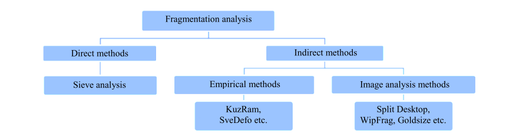

Faculdade de Engenharia da Universidade do Porto
Felipe Sinésio Trajano de Arruda
Junho, 2024
Coordenador: João Baptista / Maria de Lurdes
The fragmentation of rocks is a critical process in mining operations, directly influencing the efficiency of subsequent processing steps. Two crucial aspects of rock fragmentation that impact downstream mining processes include the particle size and the degree of internal microfractures induced by blasting. These factors significantly affect the productivity of comminution equipment, energy consumption, and mineral recovery (Kinyua et al., 2022).
This project proposes the use of 3D Convolutional Neural Networks (3D CNNs) to enhance the real-time analysis of rock fragmentation. By focusing on the real-time monitoring of material in truck buckets or being fed into mills, this research aims to improve the accuracy and efficiency of fragmentation analysis. The proposed methodology leverages advanced machine learning techniques to process video data, providing more precise fragmentation data that can be used to optimize mining operations. By utilizing 3D CNNs, we can achieve a detailed understanding of particle size distribution and internal microfracturing patterns.
This innovative approach not only aims to improve the analysis process but also to enhance the overall efficiency and cost-effectiveness of mining operations. The integration of 3D CNNs allows for precise modeling and prediction of rock fragmentation patterns, leading to more targeted and efficient blasting strategies. This, in turn, enhances the productivity and cost-effectiveness of subsequent mineral processing operations.
Keywords: Palavras-chave 1, Palavras-chave 2, Palavras-chave 3, Palavras-chave 4
A fragmentação de rochas é um processo crítico nas operações de mineração, influenciando diretamente a eficiência das etapas subsequentes de processamento. Dois aspectos cruciais da fragmentação de rochas que impactam os processos de mineração subsequentes incluem o tamanho das partículas e o grau de microfraturas internas induzidas pelo desmonte. Esses fatores afetam significativamente a produtividade dos equipamentos de cominuição, o consumo de energia e a recuperação mineral (Kinyua et al., 2022).
Este projeto propõe o uso de Redes Neurais Convolucionais 3D (3D CNNs) para aprimorar a análise em tempo real da fragmentação de rochas. Ao focar no monitoramento em tempo real do material em caçambas de caminhões ou sendo alimentado em moinhos, esta pesquisa visa melhorar a precisão e a eficiência da análise de fragmentação. A metodologia proposta utiliza técnicas avançadas de aprendizado de máquina para processar dados de vídeo, fornecendo dados de fragmentação mais precisos que podem ser utilizados para otimizar as operações de mineração.
Ao utilizar 3D CNNs, podemos obter uma compreensão detalhada da distribuição do tamanho das partículas e dos padrões de microfraturas internas. Esta abordagem inovadora não apenas visa melhorar o processo de análise, mas também aumentar a eficiência e a rentabilidade geral das operações de mineração. A integração de 3D CNNs permite uma modelagem e previsão precisas dos padrões de fragmentação de rochas, levando a estratégias de desmonte mais direcionadas e eficientes. Isso, por sua vez, melhora a produtividade e a relação custo-benefício das operações subsequentes de processamento mineral.
Palavras-chave: Palavra-chave 1, Palavra-chave 2, Palavra-chave 3, Palavra-chave 4
O setor mineiro sofreu uma rápida transformação nos últimos anos, com a digitalização das suas operações. Esta transformação tem sido frequentemente referida como a quarta revolução industrial ou Indústria 4.0. Um dos desenvolvimentos mais notáveis neste domínio tem sido a utilização crescente de abordagens baseadas na aprendizagem profunda para automatizar uma série de aplicações mineiras(Ronkin, et al, 2023).
A fragmentação refere-se ao processo de quebra de maciços rochosos sólidos in-situ em pedaços menores durante as operações de escavação ou de manuseamento de materiais. A distribuição do tamanho dos fragmentos e o grau de fragmentação dentro do maciço rochoso dinamitado constitue um aspecto crítico para otimizar a eficiência das operações de carga, transporte, britagem e moagem. (Nanda & Naik, 2023)
Já a análise de fragmentação, descreve o conjunto de métodos e técnicas utilizados para medir, estimar e caraterizar os fragmentos de rocha de uma explosão. A medição da fragmentação envolve principalmente a quantificação e a caraterização da distribuição do tamanho dos fragmentos de rocha.
Existem muitos métodos para estimar a distribuição do tamanho dos fragmentos de rochas dinamitadas. Algumas das técnicas de medição utilizadas na análise da fragmentação da rocha incluem a peneiração ou crivagem, o método de contagem de pedras sobredimensionadas, o consumo de explosivos no método de detonação secundária, o método da taxa de carregamento com pá, os atrasos de passagem no triturador, o método de análise visual, o método de análise fotográfica ou manual, o método fotogramétrico convencional e de alta velocidade e o método de fotografia ou análise de imagem de alta velocidade, incluindo métodos não controláveis baseados nas propriedades físicas e mecânicas das rochas e métodos controláveis dependentes de fatores do design, tais como a determinação da distribuição do tamanho e a previsão das rochas fragmentadas. Os métodos controláveis podem ser divididos em métodos diretos e indiretos, como podemos ver na figura 1.
Fig. 1 - Métodos de Análise de Fragmentação
O método direto mais confiável para determinar a distribuição das rochas fragmentadas é a análise granulométrica. Embora a precisão deste método seja muito elevada, a dificuldade reside principalmente no fato de exigir mais tempo e custos elevados para obter uma distribuição adequada das rochas fragmentadas. Por outro lado, os métodos indiretos, incluindo as técnicas empíricas e de análise de imagem, proporcionam trade-off entre a precisão do ensaio e a quantidade de tempo e custo.
Portanto, a investigação da fragmentação de rochas pós desmonte é um processo fundamental na indústria de mineração e vem ao longo dos anos sendo tema de estudo de diversas pesquisas. A distribuição do tamanho dos fragmentos influencia significativamente o consumo de energia, a produtividade dos equipamentos e a recuperação mineral. Portanto, uma análise precisa e rápida da fragmentação é crucial para otimizar os processos de mineração, desde o planejamento de desmonte até o beneficiamento final do minério.
Os métodos tradicionais de análise de fragmentação, como peneiramento físico e análise de imagem 2D, apresentam limitações significativas. O peneiramento é demorado, trabalhoso e muitas vezes impraticável em operações de larga escala. A análise de imagem 2D, embora mais rápida, frequentemente falha em capturar a verdadeira natureza tridimensional dos fragmentos, levando a imprecisões na estimativa de volume e forma. A investigação proposta é relevante por várias razões:
Este estudo busca preencher a lacuna entre as técnicas avançadas de aprendizado profundo e as necessidades práticas da indústria de mineração no contexto da análise de fragmentação. Ao abordar os desafios técnicos e práticos associados à implementação de CNNs 3D neste domínio, a pesquisa tem o potencial de contribuir significativamente para o avanço da eficiência, sustentabilidade e segurança nas operações de mineração.
O tema geral deste estudo é a aplicação de Redes Neurais Convolucionais 3d (3d Convolutional Neural Networks, 3d CNN's) à Engenharia de Minas. Nos ultimos anos análise de fragmentação de rochas utilizando técnicas avançadas de aprendizado profundo, especificamente Redes Neurais Convolucionais 3D (CNNs 3D). O problema específico a ser abordado é como desenvolver, implementar e validar um sistema de análise de fragmentação de rochas baseado em CNNs 3D que supere as limitações dos métodos atuais em termos de precisão, eficiência e aplicabilidade em condições reais de mineração.
Atualmente a forma de analise de fragmentação consiste na recolha de fotografias de vários locais pós desmonte, essas fotografias são então enviadas para o software que em seguida, através de algoritmos de visão computacional ou de aprendizado de máquina, calcula a curva de fragmentação.
No contexto das operações mineiras, uma mina a céu aberto pode ser descrita como a recolha e o processamento de um grande número de fragmentos de rocha resultantes do desmonte de várias áreas de trabalho menores. Estes fragmentos de rocha são depois transportados para uma instalação de processamento para tratamento posterior, e o rendimento global da produção de toda a mina a céu aberto é determinado pelas estimativas de produtividade de todas as áreas de trabalho individuais. Consequentemente, a avaliação e o controlo precisos da produtividade em cada local de trabalho a céu aberto são essenciais para uma gestão eficaz da mina e da instalação de processamento.
Esta secção visa fornecer ao leitor as informações e o contexto necessários para compreender a investigação realizada. Ao fornecer estas informações, a secção de antecedentes visa ajudar o leitor a compreender o significado e a relevância da investigação apresentada nesta tese.
| Year | Practical Problem | CV Task | Approach | Specifics | Primary CV Model |
|---|---|---|---|---|---|
| 2023 | Conveyor | Semantic | DL | SLIC + U-Net | U-Net |
| 2022 | Conveyor | Object | DL | SSD, YOLOv3, YOLOv4, YOLOv5, DCN-YOLOv3 | YOLO |
| 2022 | Conveyor | Object | DL | Yolo3, SPPNet, Yolo1,2 | YOLO |
| 2022 | Conveyor | Classification | DL | AlexNet, VGG16, ResNet50, InceptionV3, MobileNet, SENet | MobileNet |
| 2021 | Conveyor | Semantic | DL | DexiNed Edge Detection + Morphologic + Watershed | Other |
| 2021 | Conveyor | Semantic | DL | U-Net | U-Net |
| 2020 | Conveyor | Semantic | DL | U-Net | U-Net |
| 2020 | Conveyor | Semantic | DL | U-Net, Res-U-Net + Watershed | U-Net |
| 2020 | Conveyor | Semantic | DL | U-Net, RDUNET, DUNET | U-Net |
| 2020 | Conveyor | Semantic | DL | U-Net + Watershed | U-Net |
| 2020 | Conveyor | Semantic | DL | CNN + Watershed | Watershed |
| 2019 | Conveyor | Semantic | Classical | Otsu + Histogram accumulation moment | Other |
| 2019 | Conveyor | Other | Classical | Super Voxel 3D | Other |
| 2023 | Open Pit | Instance | DL | Mask R-CNN | Mask R-CNN |
| 2022 | Open Pit | Instance | Classical | Model based | Watershed |
| 2022 | Open Pit | Instance | DL | ResNeXt101 + SE | ResNeXt |
| 2022 | Open Pit | Instance | DL | ResNet-50 + Mask R-CNN | Mask R-CNN |
| 2022 | Open Pit | Object | DL | YOLO | YOLO |
| 2021 | Open Pit | Semantic | DL | Dual U-Net, boundary and regions | U-Net |
| 2021 | Open Pit | Semantic | Classical | Wavelet Superpixel segmentation | Other |
| 2021 | Open Pit | Instance | DL | Mask R-CNN | Mask R-CNN |
| 2021 | Open Pit | Instance | Classical | Super-Voxel Segmentation | Other |
| 2021 | Open Pit | Instance | DL | Mask R-CNN | Mask R-CNN |
| 2021 | Open Pit | Instance | Classical | Watershed | Watershed |
| 2021 | Open Pit | Instance | DL | Mask R-CNN | Mask R-CNN |
| 2021 | Open Pit | Classification | Classical | ResNeXt-50 | ResNet |
| 2021 | Open Pit | Classification | Classical | SM, GMB, SVM + Firefly evolutionary algorithm | Other |
| 2021 | Open Pit | Classification | Classical | ANN, Monte Carlo dropout | Other |
| 2021 | Open Pit | Other | Classical | Power Sieve3 software | Other |
| 2020 | Open Pit | Classification | DL | VGG-16 | VGG |
| 2019 | Open Pit | Instance | Classical | Split-Desktop Software | Other |
| 2019 | Open Pit | Other | Classical | Custom | Other |
| 2018 | Open Pit | Classification | Classical | SVM | Other |
| 2013 | Open Pit | Classification | Classical | ANN | Other |
| 2009 | Open Pit | Instance | Classical | Watershed | Watershed |
| 2005 | Open Pit | Instance | Classical | Watershed | Watershed |
| 2003 | Open Pit | Other | Classical | WipFrag software | Other |
| 2021 | Tunnel | Semantic | DL | FCN8s, GCN, DFN, DeepLabV3, PSPNet | DFN |
| 2021 | Tunnel | Semantic | DL | Dual U-Net, boundary and regions | U-Net |
| 2021 | Tunnel | Instance | DL | SSD + U-Net + post-processing | U-Net |
| 2021 | Tunnel | Classification | DL | AlexNet | Other |
| 2021 | Tunnel | Classification | DL | ResNet + GoogLeNet | ResNet |
| 2013 | Tunnel | Instance | Classical | Watershed | Watershed |
| 2011 | Tunnel | Instance | Classical | Watershed | Watershed |
| 2023 | Other | Semantic | DL | MSBA-Unet + CDD post-processing | U-Net |
| 2023 | Other | Object | DL | YOLO | YOLO |
| 2023 | Other | Object | DL | Watershed, FASTER-R-CNN, YOLO3 | YOLO |
| 2022 | Other | Semantic | DL | Swin-Unet | U-Net |
| 2022 | Other | Semantic | DL | DeepLab3+ | DeepLab |
| 2022 | Other | Object | DL | DCN-YOLOv3 | YOLO |
| 2022 | Other | Classification | Classical | ANN + SVR | Other |
| 2021 | Other | Semantic | DL | GAN + U-Net | U-Net |
| 2021 | Other | Semantic | DL | FraSegNet: VGG19 + ASPP | Other |
| 2021 | Other | Instance | DL | ResNet50 | Mask R-CNN |
| 2021 | Other | Instance | DL | Mask R-CNN | Mask R-CNN |
| 2021 | Other | Classification | DL | AlexNet, VGG | VGG |
| 2021 | Other | Other | Classical | Custom | Other |
| 2020 | Other | Semantic | DL | Lightweight U-Net + Morphologic + Watershed | U-Net |
| 2020 | Other | Instance | DL | Mask R-CNN + FCN | Mask R-CNN |
| 2020 | Other | Object | DL | Faster R-CNN | Faster R-CNN |
| 2020 | Other | Classification | Classical | Edge Detection | Other |
| 2020 | Other | Other | DL | Custom CNN | Other |
| 2020 | Other | Other | Classical | Custom | Other |
| 2019 | Other | Semantic | DL | SegNet | Other |
| 2019 | Other | Instance | Classical | SLIC Segmentation + Features + Classification | Other |
| 2019 | Other | Instance | Classical | Wavelet + manual features + ANN | Other |
| 2019 | Other | Instance | Classical | Morphological Reconstruction | Other |
| 2019 | Other | Instance | Classical | Otsu + Watershed | Watershed |
| 2018 | Other | Semantic | DL | Holistically-nested convolutional network | Other |
| 2018 | Other | Instance | Classical | Morphologic + Watershed | Watershed |
| 2018 | Other | Instance | Classical | Thresholding + Watershed | Watershed |
| 2018 | Other | Other | Classical | WipFrag software | Other |
| 2016 | Other | Classification | Classical | Morphologic + Watershed + SVM for classification | Other |
| 2016 | Other | Other | Classical | WipFrag software | Other |
| 2015 | Other | Classification | Classical | ANN + post-processing | Other |
| 2013 | Other | Classification | Classical | ANN + Regression | Other |
| 2013 | Other | Other | Classical | GoldSize software | Other |
| 2012 | Other | Classification | Classical | SVM | Other |
| 2011 | Other | Instance | Classical | Watershed | Watershed |
| 2010 | Other | Instance | Classical | Watershed | Watershed |
| 2009 | Other | Semantic | Classical | Thresholding morphologic | Other |
| 2009 | Other | Classification | Classical | Fuzzy Logic | Other |
| 2008 | Other | Semantic | Classical | Edge Detection | Other |
| 2005 | Other | Other | Classical | Laser 3d + Watershed | Other |
| 1999 | Other | Classification | Classical | Morphologic + ANN for classification | Other |
| 1996 | Other | Other | Classical | Image Preparation | Other |
Nos últimos anos, tem-se verificado uma tendência crescente para a utilização de técnicas de Visão Computacional (VC) para resolver vários problemas aplicados na indústria mineira.
A análise de fragmentação de rochas tem evoluído significativamente nas últimas décadas, impulsionada pela necessidade de métodos mais precisos, rápidos e não invasivos. O estado da arte neste campo abrange uma variedade de técnicas, desde métodos tradicionais até abordagens baseadas em inteligência artificial.
As abordagens baseadas em Aprendizado Profundo (Deep Learning, DP) oferecem soluções promissoras, permitindo uma análise eficiente e precisa de grandes quantidades de dados visuais obtidos em diversas operações mineiras. O processamento de dados em tempo real é essencial para tomar decisões em tempo real e otimizar as operações para obter a máxima produtividade e eficiência.
Métodos Tradicionais:
O estado da arte na análise de fragmentação de rochas está em rápida evolução, com um movimento claro em direção a métodos mais sofisticados baseados em aprendizado profundo e processamento 3D. As CNNs 3D representam uma fronteira promissora neste campo, oferecendo o potencial de superar muitas das limitações dos métodos atuais. No entanto, sua aplicação efetiva ainda enfrenta desafios significativos, principalmente em termos de aquisição de dados, poder computacional e integração com sistemas existentes. A pesquisa proposta visa abordar esses desafios, contribuindo para o avanço do estado da arte neste domínio crítico para a indústria de mineração.
Descrição dos objetivos globais e específicos da pesquisa. Explicação do que a pesquisa pretende alcançar e quais são as principais perguntas que ela busca responder.
Descrição detalhada dos métodos utilizados na pesquisa. Qualquer outro pesquisador deve ser capaz de replicar o trabalho usando os mesmos meios. Incluir a concepção do estudo, participantes, procedimentos de recolha de dados, instrumentos ou materiais utilizados e procedimentos de análise dos dados.
Apresentação dos resultados obtidos de maneira clara e objetiva, seguindo as etapas descritas na metodologia.
Análise abrangente e crítica dos resultados, contextualizando-os com a literatura existente e destacando suas contribuições para o avanço do conhecimento na área de estudo.
Identificação e discussão das possíveis restrições metodológicas, limitações nos dados e potenciais vieses, reconhecendo a natureza contextual e áreas para futuras pesquisas.
Resumo dos principais resultados, destacando sua relevância para o campo e delineando possíveis direções para trabalhos futuros, proporcionando uma síntese abrangente e projeção do seu trabalho.
Materiais adicionais que suportam o conteúdo da tese.